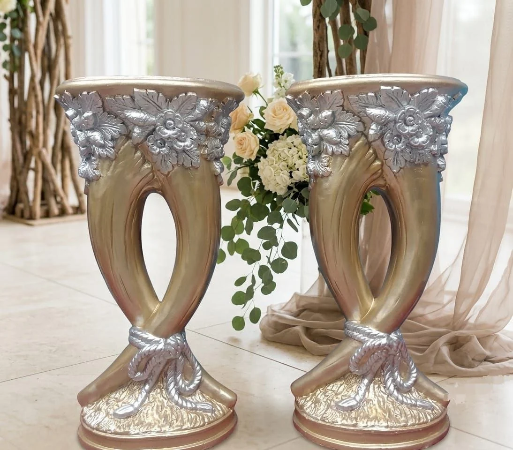
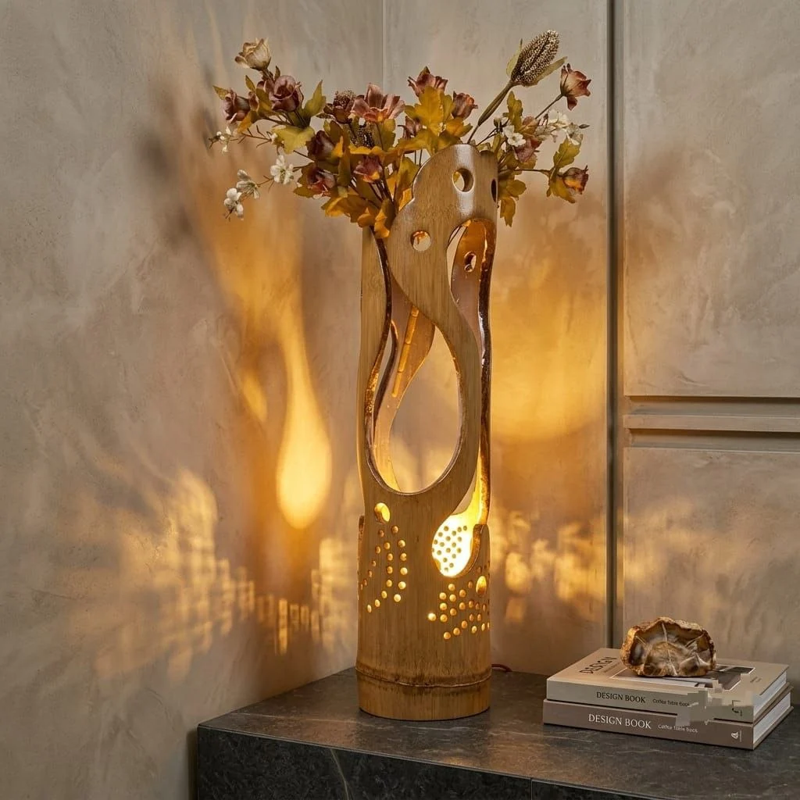

HADIRKAN KEINDAHAN ALAM
Sedikit alam.
Banyak
ketenangan.
Vas bunga dan dekorasi bernuansa alami.
Untuk rumah yang bukan hanya indah,
tetapi juga terasa hangat dan nyaman.
Detail yang indah.
Ruang yang lebih berarti.
TATA DENGAN CERITA.

Bentuk yang berkarakter
Keindahan ada dalam setiap detail.
Nuansa yang selaras
Warna dan tekstur yang menenangkan.
Ruang untuk cerita
Sentuhan personal untuk rumah Anda.
MULAI DARI SINI
Untuk setiap
sudut Anda.
Bentuk berbeda.
Rasa nyaman yang sama.
DIPILIH UNTUK RUANG ANDA
Temukan karya yang
terasa seperti rumah.
Dari lekuk yang sederhana hingga detail
yang bercerita. Ada sesuatu untuk
setiap gaya dan sudut favorit Anda.
Harga, ukuran, bahan, dan ketersediaan dikonfirmasi melalui penawaran. Foto merupakan referensi produk.

SUDUT KECIL. RASA NYAMAN YANG BESAR.DEKAT DENGAN ALAM
Beri ruang
untuk rasa
tenang.
Warna bumi. Bentuk yang mengalir. Cahaya yang hangat. Terkadang, satu sentuhan kecil cukup untuk mengubah suasana seluruh ruang.
01 — THE NATURAL EDITRUANG ANDA, CERITA ANDA
Apa nuansa Anda?
Tidak ada satu cara untuk membuat rumah.
Mulailah dari yang membuat Anda merasa nyaman.
CERITA ACUYFIBER
Bukan sekadar mengisi ruang.
Menemani cerita di dalamnya.
Kami membayangkan rumah sebagai tempat untuk bernapas lebih pelan.
Melalui vas, bentuk organik, dan detail dekoratif, AcuyFiber mengajak Anda
menemukan sentuhan yang terasa personal—dan benar-benar milik Anda.
SEDIKIT BANTUAN
Sebelum memilih
karya favorit.
Hal-hal kecil yang mungkin
ingin Anda ketahui.
Bagaimana cara memesan?
Jelajahi koleksi, tambahkan produk ke keranjang, lalu buat permintaan penawaran. Ringkasan dapat disalin atau disimpan. Pengiriman ke WhatsApp tersedia setelah nomor toko diatur. Pesanan baru terkonfirmasi setelah harga dan detail disepakati bersama toko.
Apakah harga dan ukuran sudah tercantum?
Harga, ukuran, bahan, dan ketersediaan belum ditetapkan pada katalog ini. Gunakan tombol “Minta harga” atau tambahkan catatan saat meminta penawaran agar toko dapat memberikan informasi yang tepat.
Apakah bunga dan aksesori pada foto termasuk?
Belum tentu. Foto digunakan sebagai referensi visual. Jumlah barang dalam satu paket, bunga, lampu, alas, serta aksesori lainnya perlu dikonfirmasi untuk setiap produk.
Bagaimana dengan pengiriman dan pesanan khusus?
Tuliskan kota tujuan, jumlah, serta kebutuhan ukuran atau warna pada permintaan penawaran. Ongkos kirim, ketersediaan personalisasi, waktu pengerjaan, dan metode pembayaran perlu disepakati langsung dengan toko.
SUDAH MENEMUKAN SUDUTNYA?